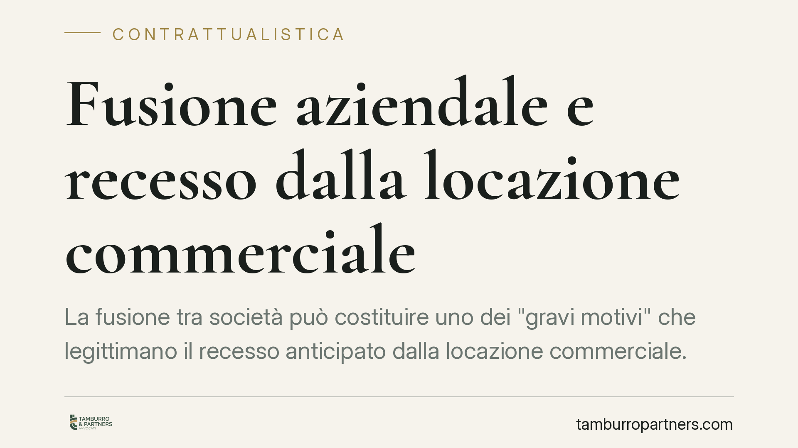

Fusione aziendale e recesso dalla locazione commerciale
La fusione tra società può costituire uno dei "gravi motivi" che legittimano il recesso anticipato dalla locazione commerciale. La Cassazione conferma questa lettura e chiarisce un punto delicato: se la riconsegna dell'immobile non segue le forme corrette, il conduttore rischia comunque l'indennità di occupazione. Vediamo perché la procedura di restituzione conta quanto il diritto al recesso.

Il caso e il principio
Un'operazione di fusione societaria modifica l'assetto organizzativo dell'impresa: sedi che si accorpano, spazi che diventano ridondanti, esigenze logistiche che cambiano. La domanda ricorrente è se questo mutamento consenta di uscire prima del termine da un contratto di locazione a uso diverso dall'abitativo.
La risposta è affermativa, ma condizionata. Il recesso anticipato è ammesso quando ricorrono i cosiddetti "gravi motivi", e la riorganizzazione conseguente a una fusione può rientrarvi. Attenzione però al secondo passaggio: il diritto al recesso non basta se la riconsegna dell'immobile avviene in modo irregolare.
Inquadramento normativo
Il riferimento è l'art. 27, comma 8, della legge 392/1978 (equo canone), che consente al conduttore di recedere in qualsiasi momento dal contratto quando ricorrano "gravi motivi", con preavviso di almeno sei mesi da comunicare con lettera raccomandata. Per "gravi motivi" si intendono fatti oggettivi, sopravvenuti ed estranei alla volontà del conduttore, che rendono eccessivamente gravoso proseguire il rapporto. La fusione aziendale, in quanto vicenda organizzativa non arbitraria, può integrare questo presupposto.
Sul versante della restituzione entrano in gioco due norme del Codice civile. L'art. 1591 c.c. obbliga il conduttore in mora nella riconsegna a corrispondere il canone convenuto fino alla restituzione effettiva, oltre al maggior danno: è la cosiddetta indennità di occupazione. L'art. 1220 c.c. disciplina l'offerta della prestazione: se il conduttore mette concretamente e formalmente l'immobile a disposizione del locatore, non è in mora, anche se il locatore rifiuta o ritarda la presa in consegna. La Cassazione, terza sezione civile, ha valorizzato proprio questo meccanismo.
Perché la riconsegna è il vero snodo
Molti conduttori ritengono che, comunicato il recesso e lasciato materialmente l'immobile, il rapporto sia chiuso. Non è così. Se la restituzione non è formalizzata — mancano la riconsegna delle chiavi documentata, il verbale di consegna, un'offerta chiara al locatore — il conduttore può restare esposto all'indennità di occupazione ex art. 1591 c.c. anche per i mesi in cui l'immobile è di fatto vuoto.
La lettura offerta dalla giurisprudenza è netta: una riconsegna eseguita in modo informale non blocca il decorso dell'indennità, mentre un'offerta di restituzione formalmente corretta ai sensi dell'art. 1220 c.c. libera il conduttore dagli obblighi, anche a fronte dell'inerzia del locatore.
Implicazioni pratiche
Per le società coinvolte in operazioni di fusione, il messaggio è duplice. Da un lato si conferma uno spazio per uscire da locazioni divenute inutili senza attendere la scadenza contrattuale. Dall'altro, il beneficio si perde se la fase finale del rapporto — la restituzione — viene gestita con leggerezza.
Per i locatori vale il ragionamento speculare: il rifiuto o il ritardo ingiustificato nella presa in consegna non genera automaticamente un credito per indennità. Se il conduttore ha offerto correttamente l'immobile, l'indennità non matura.
Cosa fare in concreto
- Documentate il grave motivo. Conservate delibere di fusione, atti societari e ogni evidenza della riorganizzazione che rende gravosa la prosecuzione del contratto.
- Inviate il preavviso nei termini. Comunicate il recesso con raccomandata (o PEC con valore equivalente) rispettando i sei mesi di preavviso previsti dalla legge.
- Formalizzate la riconsegna. Predisponete un verbale di consegna, riconsegnate le chiavi con prova documentale e mettete l'immobile a disposizione del locatore in modo tracciabile.
- Attivate l'offerta ex art. 1220 c.c. in caso di rifiuto. Se il locatore non collabora, valutate un'offerta formale della restituzione per interrompere ogni pretesa di indennità.
- Verificate le clausole contrattuali. Alcuni contratti disciplinano recesso e riconsegna in modo specifico: leggetele prima di agire.
Disclaimer
Contributo informativo a cura di Tamburro & Partners - Avv. Giuseppe Tamburro. Non costituisce parere legale.
Ogni contratto ha il suo equilibrio.
Se vuoi una revisione delle clausole o una redazione su misura, scrivi allo studio. Ti rispondiamo entro un giorno lavorativo.